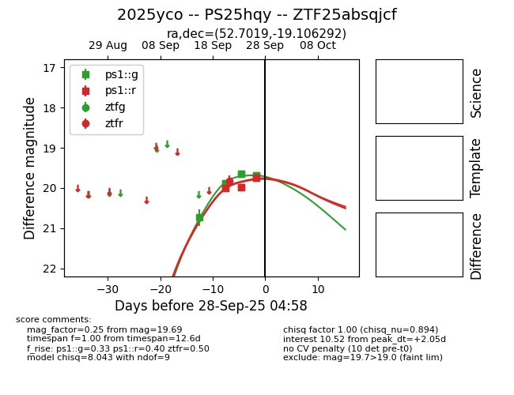
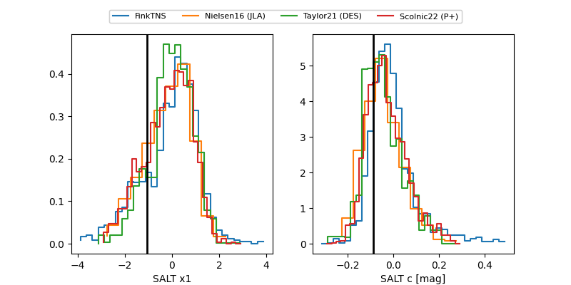

FINK: ZTF25absqjcf
Lasair: ZTF25absqjcf
ALeRCE: ZTF25absqjcf
TNS: 2025yco
YSE: 2025yco
2025yco (yse,tns)
ZTF25absqjcf (ztf,fink)
PS25hqy (panstarrs)
equatorial (ra, dec) = (52.7019,-19.10629)
galactic (l, b) = (209.1979,-52.65069)


last ps1::g=19.69, ps1::r=19.75, ztfr=19.82
7 ps1::g, 6 ps1::r, 1 ztfr detections